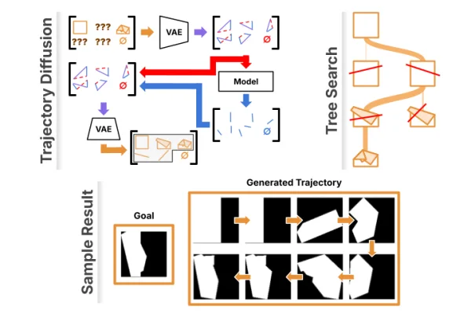
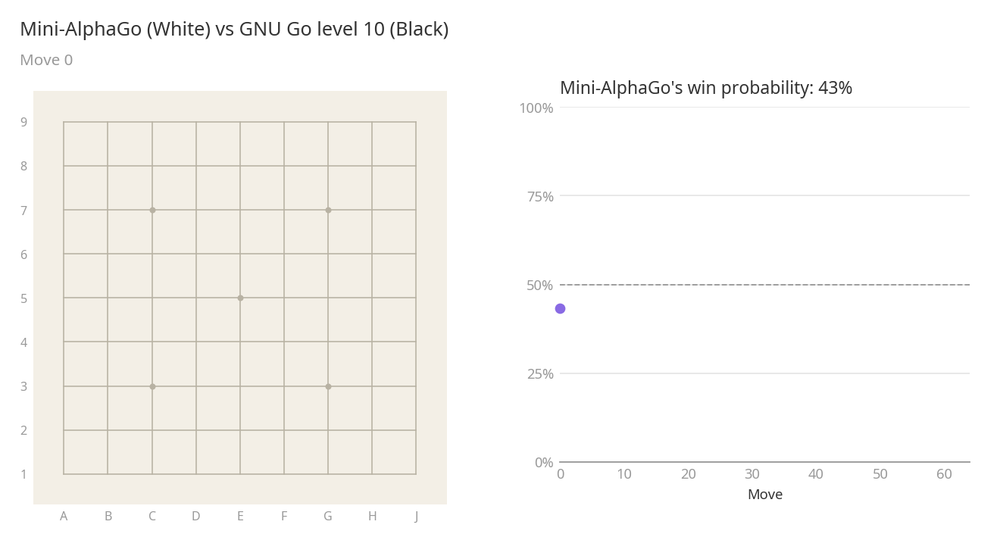
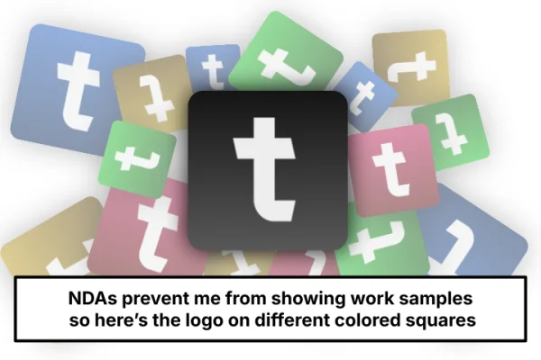

Buying prestige on Product Hunt: How tech startups manufacture artificial success
Jeffrey Lu
I research with the Cianfrocco Lab at the Life Sciences Institute, lead projects for the Michigan Data Science Team, write for The Michigan Daily, and build data systems for clients through Tuesday Technologies.

Inverse design for 2D origami with latent trajectory diffusion and Monte Carlo tree search.

A 9×9 Go bot reproducing a hybrid of AlphaGo and AlphaGo Zero, beating GNU Go Level 10.

LLM knowledge systems, mathematical modeling, and data pipelines for enterprise clients
2025
2024
Jeffrey Lu, Ivan Rodriguez
Code2022
Krish Khanna, Jeffrey Lu, Jay Warrier
2028
2026